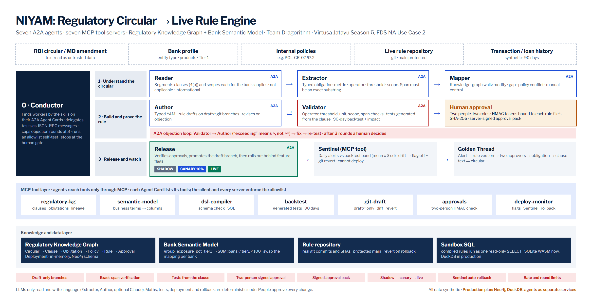

Virtusa Jatayu Season 6 · FDS NA, Use Case 2 · Regulatory Circular to Live Rule Engine
Every clause becomes a rule: tested, approved by two people, released safely, and traceable back to its sentence.
Team Dragorithm: Senaaravichandran A, Abiyshek S, Jerrick Austin Manuel G, Venkat Narayanan S, Vishal R
Mentor: Prof. Suresh R · Sri Manakula Vinayagar Engineering College, Madagadipet, Puducherry
Live product: niyam-virtusa.vercel.app · Source: github.com/Senaaravichandran/niyam
When the Reserve Bank of India changes one number in one paragraph, a bank has to find every internal policy and system rule that depends on it, change them correctly, and prove why each alert now fires. Today that is manual work measured in weeks. NIYAM is a working multi-agent system that does it in minutes, with humans in charge.
All circulars, banks, loans, approvers and alerts in the demo are synthetic and labelled so. RBI statistics are public and cited.
On 28 November 2025 RBI consolidated roughly 9,000 circulars into 244 Master Directions, one per subject and type of regulated entity. The consolidation itself changed no policy, but it changed how change arrives: every future instruction is an amendment to a living document. In effect, banks now receive a stream of diffs to their rulebook, and no bank system can read a regulatory diff and produce a rule diff.
Compliance officers report that fully implementing a regulatory change still takes more than a year on average (CUBE, 2025 survey).
| Failure | Example |
|---|---|
| Comparator error | The clause says “exceeding 12 per cent”; the rule fires at >= 12, flagging exposures exactly at the limit. |
| Scope error | A paragraph for Upper Layer NBFCs is applied to a co-operative bank, or the reverse. |
| Stale exception | An internal policy still lets the Board approve above the new limit, suppressing the report the circular now requires. |
| Missed obligation | A new concentration limit has no rule at all. |
| Unexpected impact | The new rule triples alert volume and the operations team finds out on day one. |
| No audit trail | An inspector asks why an alert fired; nobody can point to the sentence and the approvers. |
RBI imposed 353 penalties worth ₹54.78 crore in 2024-25, and 264 of them fell on co-operative banks. There were 1,457 urban co-operative banks at the end of March 2025 and 9,291 registered NBFCs at the end of 2024. These institutions carry the same rulebook as the largest banks with a fraction of the compliance and IT staff.
RBI's FREE-AI framework (August 2025) sets seven Sutras, including Accountability and Understandable by Design, and 26 recommendations. Any AI touching compliance must be explainable, keep humans accountable, and be safe to roll back.
The demo circular RBI-SYN-2026-017 (synthetic) lowers the group exposure limit and says, in paragraph 4(b):
“A regulated entity shall flag for report any group of connected counterparties with an aggregate exposure exceeding 12 per cent of Tier 1 capital.”
The bank's live rule was written for the old limit as “equal to or exceeding 15 per cent”, with a Board-approval exception. An engineer making the obvious minimal edit changes 15 to 12 and keeps everything else. The new rule now fires on >= 12 and still lets the Board suppress reports, which paragraph 5 forbids.
NIYAM's Author agent makes exactly that minimal edit. The Validator, which is built separately and never shares code with the Author, generates tests from the clause rather than from the draft. The test “a group at exactly 12.00%” must stay quiet, and the draft fires. The Validator sends an objection to the Author over A2A; the Author fixes it; all 14 tests pass.
- op: ">=" + op: ">" value: 12 - unless: board_approved Objection OBJ-EXP-012-01 · OP-FIDELITY + POLICY-OVERRIDE expected: op ">" because 4(b) says "exceeding" (strictly greater; equality does not trigger) found: op ">=", unless: board_approved evidence: Exactly on the limit (12.00%): expected quiet, fired
Regulatory-change technology is good at telling a bank what changed and who owns it. We found none that takes the last step: a tested, approved, monitored change to a live rule, traceable to the clause.
| Product | What it does | Where it stops |
|---|---|---|
| CUBE (with Thomson Reuters Regulatory Intelligence, 4CRisk.ai) | AI horizon scanning; maps obligations to policies, controls and risks | Obligation-to-control map; no executable rule, test or release |
| Corlytics | Regulatory monitoring, policy management, controls mapping, integrations to GRC tools | Policy and control alignment |
| Ascent RegTech | Obligation registers built from rulebooks | The register |
| Compliance.ai (Archer) | Change monitoring feeding GRC workflow | Alerts and tasks |
| Norm Ai | Regulation-to-code compliance agents with an audit trail | Checks documents and actions; not a bank's monitoring rules with staged release |
| Hummingbird, Lucinity | Explainable AML investigation agents with human approval | Investigation, not rule change |
| Wolters Kluwer OneSumX, Regnology | Regulatory reporting and capital engines | Vendor-shipped releases, not derived per bank from each circular |
| IBM OpenPages with watsonx | GRC workflow with an LLM assistant | Tracks obligations and controls |
| OnFinance AI (India) | Compliance agents fine-tuned on RBI, SEBI and IRDAI material; reports high internal accuracy | Interpretation and workflow; accuracy self-reported |
| NIYAM | Circular → clause → obligation → mapped rule → typed draft → tests → backtest → two signatures → shadow → canary → live | Does not stop until every alert traces to its sentence, and rolls itself back on drift |
Based on vendors' public descriptions and trade press, 2025-2026.
Language work goes to agents. Arithmetic, tests, deployment and rollback go to deterministic code. Decisions go to people.
| Agent | Job | Tools it may call (MCP) |
|---|---|---|
| Conductor | Finds workers by Agent Card skills, delegates A2A tasks, runs an allowlist self-test, caps objection rounds, stops at the human gate | kg_read_circular, kg_stats |
| Reader | Splits the circular at its own numbering and scopes each clause for the bank, with a reason | kg_read_circular, kg_write_clauses, sm_bank_profile |
| Extractor | Turns clauses into typed obligations; the quoted span must be an exact substring or it is rejected. Optional Claude path | kg_read_clauses, sm_resolve_metric, kg_write_obligations |
| Mapper | Walks the knowledge graph: rules to modify, gaps, policy conflicts, manual controls | kg_read_obligations, kg_find_rules, kg_find_policies, kg_link_mapping, git_read_rule |
| Author | Writes typed YAML rule drafts on draft/* git branches; revises on objection. Optional Claude path | git_read_rule, git_commit_draft, dsl_validate, dsl_compile |
| Validator | Independent challenger: static checks, tests generated from the clause, A2A objections; then a 90-day backtest and impact analysis | kg_read_obligations, dsl_validate, dsl_compile, bt_run_tests, bt_run_backtest, git_diff |
| Release | Verifies two-person approval, promotes the draft branch, rolls out shadow → canary 10% → live, polls the Sentinel, rolls back | appr_verify, deploy_promote, deploy_set_mode, deploy_sentinel_check, deploy_rollback, git_log |
Rules are YAML validated by a strict typed schema: unknown fields, metrics or operators are rejected and text fields must be single-line. A deterministic compiler turns each rule into one read-only SQL statement over the Bank Semantic Model, with percentages rounded so a value on the limit compares as equal.
rule_id: SYN-EXP-012 version: 2 when: metric: group_exposure_pct_tier1 op: ">" value: 12 unit: pct source: circular: RBI-SYN-2026-017 clause: 4(b) span: aggregate exposure exceeding 12 per cent of Tier 1 capital
Two people, two roles. Each approval is an HMAC token over the rule id, version, the SHA-256 of the exact file, the approver, role and run; tokens expire after 24 hours. The server also signs the whole approval pack, so obligations, mappings and forecasts cannot be altered between approval and release.
Shadow, canary, live. Three days logging only, four days on 10% of subjects behind a feature flag, then live.
Sentinel. Each day's alerts are compared with the backtest forecast band (mean ± 3 standard deviations). In the demo a duplicated loan feed on day 10 breaches the band; the two exposure rules roll back automatically (flag off, git revert) while the concentration rule, a ratio unaffected by duplication, stays live.
Golden Thread. Any alert opens its rule version and commit, both approvers, the obligation, the exact clause text and the circular.

/a2a/{agent}/.well-known/agent-card.json and answers SendMessage, GetTask and CancelTask. Objections between Validator and Author are A2A tasks.| Attempt | Result |
|---|---|
| Edit a rule after both approvers sign | refused “Rule file changed after approval” |
| Inflate the forecast to silence the Sentinel | refused approval pack signature no longer matches |
| Ask for approval of a pack the server never produced | refused HTTP 409 |
| Reuse tokens from another run | refused “Token was issued for another run” |
| Smuggle SQL through a rule's text fields | refused single-line schema; one read-only SELECT per rule |
| Extractor calls the deploy API | refused by its MCP client and again by the server |
Where the rule-based extractor is still wrong: numbers written in words, limits in rupee amounts, “the higher of” constructions, and two procedural phrasings. The optional Claude path exists for these, and every model answer is still span-checked, schema-checked and tested.
| Use case asks for | NIYAM |
|---|---|
| Workflow: intake → extraction → mapping → authoring → backtesting → impact → validation → approval → shadow → rollout and monitoring | Reader → Extractor → Mapper → Author → Validator (tests, backtest, impact) → two-person approval → Release (shadow, canary, live) → Sentinel → rollback → Golden Thread |
| Data sources: circulars, policies, rule repositories, bank profiles, transactions, backtest results, deployment metrics, approval history | Synthetic circular; POL-CR-07 policy; git rule repository; bank profile; 90-day loan book; backtest series and forecasts; daily rollout metrics; signed approval tokens |
| Tech stack: multi-agent orchestration, document retrieval, obligation registry, rule DSL, A2A messaging, sandbox engine, backtesting, version control, deployment APIs, monitoring, LLMs | Conductor over A2A; clause store in the knowledge graph; Obligation nodes; typed YAML DSL; A2A v1.0 JSON-RPC; SQL sandbox; backtest MCP server; isomorphic-git; deploy-monitor MCP server; Sentinel; Claude for Extractor and Author |
| Guardrails: draft-only changes, clause-level traceability, validation, mandatory human approval, controlled rollout, monitoring, rollback, rate limits | draft/* branches only; exact-span verification and Golden Thread; Validator with generated tests; two-person HMAC approval and signed pack; shadow and 10% canary; Sentinel band; automatic revert; objection rounds capped at 3 and per-address limits |
Urban co-operative and small finance banks, and mid-layer NBFCs: the full RBI load with lean teams, and most of the penalties. Large banks: a regulation-to-rule layer over the AML, fraud and limit engines they already run. IT services firms: an accelerator inside compliance-transformation programmes.
Analysts size the global RegTech market at roughly USD 15 to 19 billion in 2025, growing 17 to 21% a year (IMARC; ResearchAndMarkets). India-specific growth estimates range from about 18% to 27% a year depending on the analyst. Our India serviceable estimate of about ₹550 crore a year is a team estimate built bottom-up from entity counts and assumed price points.
BFSI is Virtusa's largest practice. NIYAM is designed as a delivery accelerator rather than a closed product: regulator-agnostic agents plus a client-specific semantic model. A new client engagement maps the client's tables to the business metrics; the agents, DSL, tests and release path stay the same. New regulators (SEBI, IRDAI, then others) arrive as new Reader segmenters and Agent Cards, not a rewrite. Rules export as portable SQL that can target a client's warehouse or rule engine.
| Sutra | How NIYAM enforces it |
|---|---|
| Trust is the Foundation | Spans are verified, never trusted; non-synthetic numbers carry sources |
| People First | No rule reaches production without two named people signing the exact file |
| Innovation over Restraint | Agents do weeks of reading and drafting in minutes |
| Fairness and Equity | Rules are scoped by entity type; the backtest shows who is newly flagged before anyone signs |
| Accountability | Tokens name the approver and role; every alert names them through the Golden Thread |
| Understandable by Design | Every objection states expected, found and the clause; every alert links to its sentence |
| Safety, Resilience and Sustainability | Shadow, canary, Sentinel and automatic rollback; deterministic code for maths and deployment |
“Aligned with” describes design intent; it is not a claim of regulatory certification.
| Part | In the proof of concept | In production |
|---|---|---|
| Agents | running Seven A2A agents in one deployment; in-run calls carry serialised JSON-RPC | Each agent as its own service behind the bank's gateway |
| Knowledge graph | running In-memory, Neo4j labels and relationships | planned Neo4j running the Golden Thread Cypher |
| Sandbox SQL | running SQLite compiled to WebAssembly | planned DuckDB or the bank's warehouse; same SQL |
| Rule repository | running Real git (isomorphic-git) in memory | The bank's Git server with protected main |
| LLM | running Rule-based by default; Claude for Extractor and Author when a key is set | A private or on-premise model through the same interfaces |
| Data | synthetic 706 borrowers, 48 groups, 90 days, fixed seed | Stays inside the bank; agents see schemas and aggregates only |
Five independent layers: exact-span check, strict schema, the Validator's clause-derived tests on compiled SQL, two signatures over the file hash, and shadow mode with no customer effect. No path skips a human.
Separation of duties. The Author cannot validate its own work, the Extractor cannot deploy, Release cannot write rules. Each agent's tools are limited by its card and checked by every server.
We keep AI agents only where language understanding is needed. Backtesting, impact maths and drift checks are deterministic code: faster, reproducible, and they cannot hallucinate. All ten proposed roles are still covered.
Not in the proof of concept. The graph is in memory with the Neo4j schema, and the Golden Thread query is written in Cypher, so moving to Neo4j is a storage change, not a redesign.
Agents run once per circular, off the hot path. What runs per transaction is compiled SQL, portable to the bank's warehouse or rule engine.
Models see circular text and rule metadata only. Backtests run inside the bank's boundary on its own data.